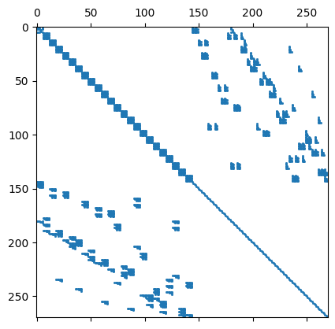

14. Hybrid DG for elliptic equations#
\(\DeclareMathOperator{\opdiv}{div}\)
The discretization of elliptic operators by DG is more tricky. As a follow up on the DG method, we introduce now the hybrid DG method (HDG).
The HDG method involves discontinuous polynomials on elements, and additional polynomials on the edges (or faces, in 3D).

It was introduced by B. Cockburn, J. Gopalakrishnan, and R. Lazarov in 2009, see paper
We start from the Poisson equation $\( -\Delta u = f \)$
multiply by discontinuous test functions, integrate by parts on every element:
Since the normal-derivatives are continuous from element to element, we can smuggle in a single-valued test-function \(\widehat v\) on every edge:
This is a non-symmetric bilinear-form for the self-adjoint Poisson operator, what we don’t like. For the true solution \(u\), the solution on the elements restricted to the edges is the same as the solution restricted to the edges, we are adding a zero term:
This form may not be coercive, and we have to add a stabilization term:
Here, \(h\) is the element-size, \(p\) the polynomial order, and \(\alpha\) a sufficiently large stabilization parameter (typically 3 in 2D and 10 in 3D). This ‘sufficiently large’ condition is a drawback of the so called interior penalty version of DG/HDG, but there exist more sophisticated, robust versions.
from ngsolve import *
from ngsolve.webgui import Draw
mesh = Mesh(unit_square.GenerateMesh(maxh=0.3))
order = 2
fes1 = L2(mesh, order=order)
fes2 = FacetFESpace(mesh, order=order, dirichlet="left|bottom",
highest_order_dc=False)
fes = fes1 * fes2
u,uhat = fes.TrialFunction()
v,vhat = fes.TestFunction()
h = specialcf.mesh_size
n = specialcf.normal(2)
alpha = 3
dS = dx(element_vb=BND)
a = BilinearForm(fes, condense=False)
a += grad(u)*grad(v)*dx
a += (-n*grad(u)*(v-vhat)-n*grad(v)*(u-uhat))*dS
a += alpha*(order+1)**2/h*(u-uhat)*(v-vhat)*dS
f = LinearForm(fes)
f += 1*v*dx
a.Assemble()
f.Assemble()
print ("ndof: ", fes.ndof)
print ("non-zero(A):", a.mat.nze)
print ("non-zero(Inv):", a.mat.Inverse(fes.FreeDofs(a.condense), "sparsecholesky").nze)
ndof: 270
non-zero(A): 5130
non-zero(Inv): 2637
gfu = GridFunction(fes)
if not a.condense:
gfu.vec.data = a.mat.Inverse(fes.FreeDofs()) * f.vec
else:
solvers.BVP(bf=a, lf=f, gf=gfu)
Draw (gfu.components[0]);
import scipy.sparse as sp
import matplotlib.pyplot as plt
scipymat = sp.csr_matrix(a.mat.CSR(), a.mat.shape)
plt.spy(scipymat, precision=1e-10, markersize=1);

Disadvantages of HDG methods are that they need more variables in comparison to DG methods.
However, there are a couple of advantages which more than compensate that:
boundary conditions can be applied in the usual way: Constraining Dirichlet dofs, and apply Neumann boundary conditions via the linear-form on the facet test-functions
internal variables do not couple across different elements. All exchange happens via the facet variables. Thus, internal variables can be condensed out leading to a system only for the facet variables. This condensation can be performed already within the assembling loop. If we compare non-zero matrix entries, outperforms DG methods.
For element order \(k\), one can use order \(k-1\) on the facet. However, that needs a projection within the penalty term
\[ \int_{\partial T} \frac{\alpha p^2}{h} \Pi_{L_2}^{P^{k-1}} (u-\widehat{u}) \; (v-\widehat{v}) \]This projection was introduced in the Master thesis by Christoph Lehrenfeld and is now called the Lehrenfeld trick.
14.1. Continuity and discrete coercivity of the HDG bilinear-form#
HDG - norm:
Assume \(\alpha > c_{inv}\), where \(c_{inv} = O(1)\) depends on the shape of elements. Then, for \((u, \lambda) \in P^p({\cup T}) \times P^p({\cup F})\) there holds
Proven element by element: